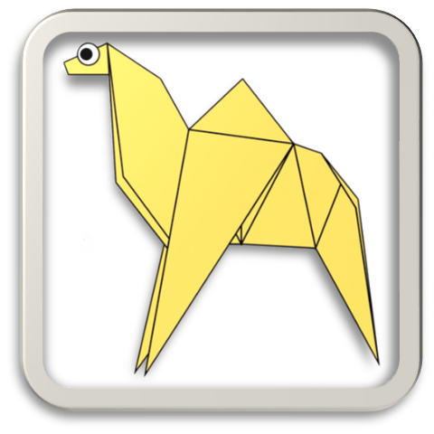

Intresting Facts About chameleon
- Chameleons are reptiles that are part of the iguana suborder
- Changing Skin color is an important part of communication among Chameleons
- Most Chameleons have a prehensile tail that they use to wrap around the tree branches

Intresting Facts About Pigeon
- Pigeons are incrdibly complex and intellegent animals
- Pigeons are reowned for their oustanding navigational abilities
- Pigeons have excellent hearing abilities

Intresting Facts About Camel
- Camels have three sets of eyelids and two rows of eyelashes to keep sand out of their eyes.
- Camels have thick lips which let them forage for thorny plants other animals can't eat.
- Camel is known as the King Of the Dessert
Intresting Facts About Cicada
- Cicadas can survive a huge fall as babies, or nymphs
- The loud whirring or buzzing sound you hear is an all-male cicada chorus.
- Females may be attracted to the sound of motors.